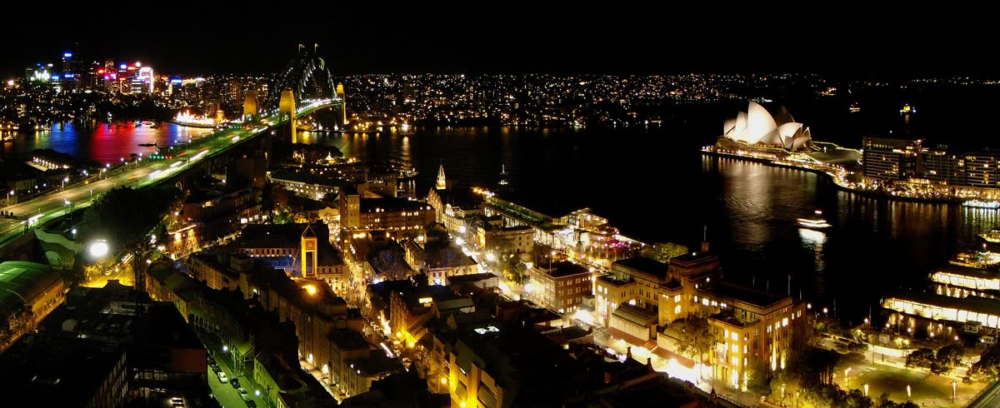
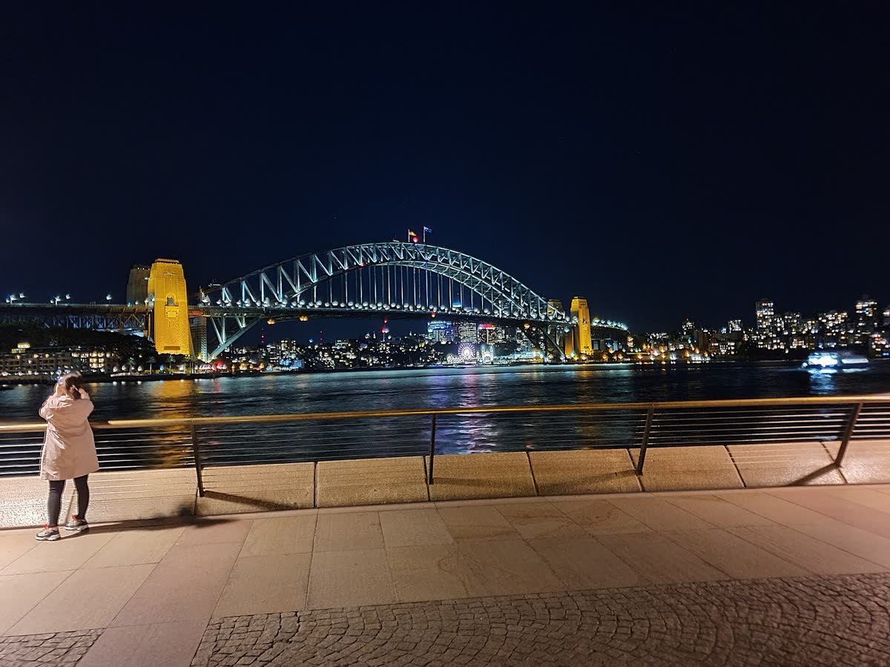
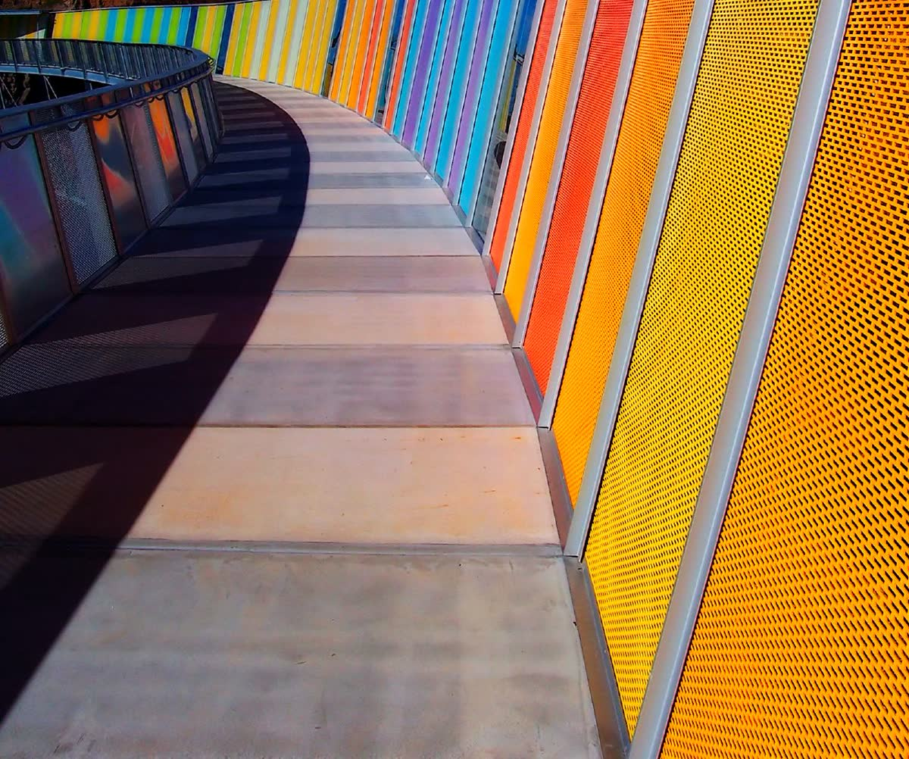
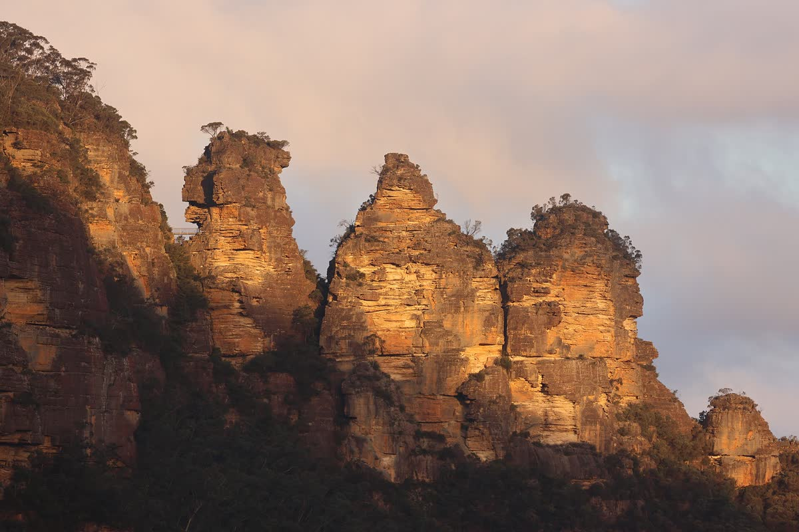
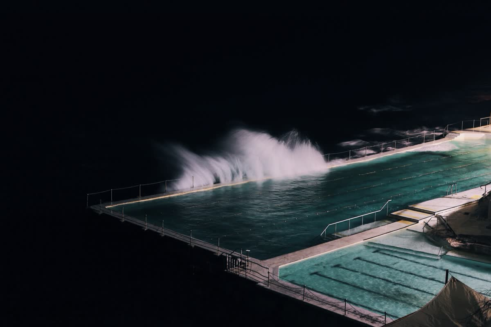

Opera House forecourt
Big white sails up close.

14 Burton Street, Glebe NSW 2037
Open in MapsArrival day. Rest first, then free famous views at sunset (around 7:45pm).
EasyLand at Sydney Airport. Immigration, bags, pick up cars.
Drive to Glebe. Drop bags / check in if allowed.
Late lunch near Glebe, then rest.
Circular Quay → Opera House → Harbour Bridge views → The Rocks.
📍 MapDinner near the harbour, then home.

Sydney Opera House Car Park, 2A Macquarie St (2.2m height limit). Prepaid evening rate from about A$40.75 per car. Looking around outside is FREE. Guided tour (~A$50) not advised after a flight.
Family-friendly. Savoury vegetarian dishes and pancakes.
Thai stir-fries and tofu curries. Check every sauce has no seafood.
Falafel, hummus, halloumi and mezze.
Paneer, dal, naan. Over budget: set banquet for groups of 6+.
DFO shopping, an optional short sight nearby, then Sydney-famous desserts.
EasyDrive from Glebe in both cars.
DFO Homebush outlet shopping. Pick a meeting point first!
📍 MapLate lunch at DFO (food court is easiest for mixed diets).
Optional: pick ONE sight below. Or go home and rest.
Dinner in Glebe or Newtown, then dessert if you like.

DFO: first 2 hours FREE. Shopping + lunch is about 5 hours: about A$26 per car (A$52 for both cars). Shops normally open 10am–6pm Saturday. Olympic Park: register each car plate for 2 hours FREE, then A$5/hour.
Plant-based burgers.
Vietnamese vegan noodles and rice.
Plant-based wood-fired pizza.
Vegan Italian focaccia. Check 9pm closing.
Self-serve frozen yoghurt, pay by weight.
Famous strawberry-watermelon cake (~A$13). Contains almonds. Newtown, open till 10pm Sat.
Creative gelato. 258 King St, Newtown.
Turkish ice cream and baklava. Enmore Rd, Newtown.
The big day: cable cars, rainforest and the Three Sisters.
Full day
Book Scenic World tickets ahead for a ~12:30pm session (from A$64 per adult; Sunday may cost more). Scenic World, 1 Violet St: FREE parking (2m height limit). Echo Point: paid parking, check the machine.
BEST FIT. Wood-fired veg pizzas. Open 7 days.
Asian fusion, vegan options. Sunday lunch until 3:30pm. Call ahead for 10+.
Vietnamese noodles. Check the broth is vegetarian and Sunday hours.
Global street food. Tight: closes about 3pm Sunday.
A slow beach day with ocean views and photos.
EasyLeave Glebe. Allow extra time to park.
Bondi Beach walk, Pavilion and beach photos.
📍 MapBondi Icebergs viewpoint. Relax at a café. Fitter guests can walk part of the coast path.
📍 MapLate lunch near the beach.
Relax, last photos, back to Glebe.
Optional dinner near home.

Paid street bays on Queen Elizabeth Drive / Park Drive North, off Campbell Parade (7am–7pm). Check the price on the day. Accessible bays and ramps near the Pavilion. Beach and views are FREE.
TOP PICK. Monday risotto special A$27, veg pasta and pizza. Book for the group.
Falafel pita, hummus, halloumi, salads.
Vegetarian pizzas. Check hours and seats for 10+.
Vegan pies. Takeaway backup, not for a sit-down group.
Check out. Sujay & Laura drive. Family takes the train. Meet in Newcastle.
Travel dayBreakfast, pack, check out. Agree who carries which bags.
Sujay & Laura drive to Newcastle (about 2½–3 hours).
Family goes to Sydney Central Station with bags.
📍 MapTake a CCN train to Newcastle (check times on the day).
Family arrives at Newcastle Interchange. Pickup as arranged.
📍 MapLate lunch when you can. Bring vegetarian snacks for the train.
Sujay & Laura take the car and the bulky bags. Family: choose a train carriage with room for luggage.